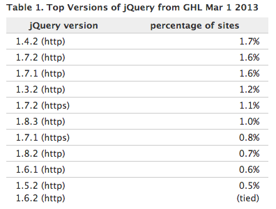
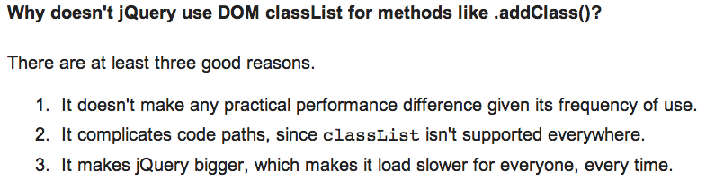

Making the Case for jQuery in a Browser Utopia

TJ VanToll
- http://tjvantoll.com
- @tjvantoll
-
Developer Advocate

-
Team Member

Browser Utopia
- All features implemented
- No bugs
<disclaimers>
I'm on the jQuery UI team.
This is a jQuery conference.
</disclaimers>


Main anti-jQuery arguments:
-
API Parity
The native platform does everything now. -
Too Big / Bloated
File size is too big, especially for mobile. -
Performance
Native is faster.
API Parity
$ === document.querySelectorAll()?DOM APIs have DRASTICALLY improved
Removing Elements
<div>Hello <p>World</p></div>
<script>
// Before
var element = document.getElementsByTagName( "p" )[ 0 ];
element.parentNode.removeChild( element );
// After
document.querySelector( "p" ).remove();
</script>
Managing Class Names
<div class="one">Hello World</div>
<script>
// Before
var div = document.getElementsByClassName( "one" )[ 0 ];
div.className = div.className + " two";
// After
var div = document.querySelector( "div" );
div.classList.add( "two" );
</script>
Problems With DOM APIs
- Still verbose
- Not easy to use
- Lots of gotchas
Problems With DOM APIs
- Still verbose
- Not easy to use
- Lots of gotchas
AJAX request - My first attempt
var xhr = new XMLHTTPRequest();
xhr.onload = function( data ) {
console.log( data );
};
xhr.open( "test.json" );
xhr.send();
AJAX request - correct
var xhr = new XMLHttpRequest();
xhr.onload = function() {
console.log( this.responseText );
};
xhr.open( "get", "test.json" );
xhr.send();
AJAX request - jQuery
$.getJSON( "test.json" ).then(function( data ) {
console.log( data );
});
Wrap an element with a <div>
<p>Hello World</p>
<script>
// jQuery
$( "p" ).wrap( "<div>" );
// DOM
var p = document.querySelector( "p" ),
div = document.createElement( "div" );
p.parentNode.appendChild( div );
div.appendChild( p );
</script>
Problems With DOM APIs
- Still verbose
- Not easy to use
- Lots of gotchas
Add a class name to all paragraphs (jQuery)
$( "p" ).addClass( "foo" );
Add a class name to all paragraphs (wrong)
document.querySelectorAll( "p" ).classList.add( "foo" );
Add a class name to all paragraphs (wrong)
document.querySelectorAll( "p" )
.forEach(function() {
this.classList.add( "foo" );
});
Add a class name to all paragraphs (right)
var paragraphs = document.querySelectorAll( "p" );
for ( var i = 0; i < paragraphs.length; i++ ) {
paragraphs[ i ].classList.add( "foo" );
};
Add a class name to all paragraphs (right)
function find( selector ) {
return Array.prototype.slice.call(
document.querySelectorAll( selector )
);
}
find( "p" ).forEach(function( p ) {
p.classList.add( "foo" );
});
Problems With DOM APIs
- Still verbose
- Not easy to use
- Lots of gotchas
Gotcha #1
<div>
<p>Hello World</p>
</div>
<script>
var div = document.querySelector( "div" );
console.log( div.firstChild );
</script>
Gotcha #1 - Answer
<div>
<p>Hello World</p>
</div>
<script>
var div = document.querySelector( "div" );
console.log( div.firstElementChild );
</script>
Gotcha #2
<div>
<p>Hello World</p>
</div>
<script>
var div = document.querySelector( "div" );
console.log( div.querySelectorAll( "> p" ) );
</script>
querySelectorAll cannot handle leading combinators.
<+~Gotcha #3
<div>
<p>Hello World</p>
</div>
<script>
var div = document.querySelector( "div" );
console.log( div.querySelectorAll( "div p" ) );
</script>
querySelectorAll's limitations
selector-native.js
Gotcha #4
<p class="big"></p>
<script>
var paragraphs = document.getElementsByClassName( "big" );
console.log( paragraphs.length );
document.body.innerHTML += "<p class='big'></p>";
console.log( paragraphs.length );
</script>
getElementsByClassName() and getElementsByTagName() return live NodeLists
http://www.nczonline.net/blog/2010/09/28/why-is-getelementsbytagname-faster-that-queryselectorall/Main anti-jQuery arguments:
-
API Parity
The native platform does everything now. -
Too Big / Bloated
File size is too big, especially for mobile. -
Performance
Native is faster.
jQuery Core File Size
(minified and gzipped)
- 1.10.2: 32.00 KB
- 2.0.3: 28.56 KB
Is that too big for mobile?
<script src="jquery.js"></script>At a high level, the browser:
- Downloads the script
- Parses / Executes the script
At a high level, the browser:
- Downloads the script
- Parses / Executes the script
Importance of reducing round trips
- In 2012, the average RTT (Round Trip Time) time was 344ms in the US and 372ms in the UK.
- In 2012 the average download throughput was 1.6 Mbps in the US and 1.4 Mbps in the UK.
Reducing round trips > Reducing file size
Concatenate jQuery with your app's other scripts
<!-- before -->
<script src="jquery.js"></script>
<script src="app.js"></script>
<!-- after -->
<script src="app.js"></script>
Don't load jQuery from an external CDN.
(source)
There are more important things
At a high level, the browser:
- Downloads the script
- Parses / Executes the script
Timing the browser's parsing is hard.
Bytes --> Text --> AST --> JIT Compilation -> Execution
Rough idea of parse times
<script>var start = new Date();</script>
<script>
/* jQuery's minified source code in its entirety */
</script>
<script>alert( new Date() - start );</script>
Raw data of 5 loads in each browser. Times are in ms.
Browser | jQuery 1.10.2 | jQuery 2.0.3
------------------------|--------------------------|-------------------------
IE 11 | 18, 20, 20, 20, 24 | 18, 21, 14, 16, 15
Chrome 31 | 20, 8, 6, 5, 7 | 15, 8, 5, 7, 6
Safari 7 | 11, 4, 4, 4, 4 | 9, 5, 3, 3, 2
Firefox 26 | 12, 13, 13, 12, 13 | 12, 12, 11, 12, 12
iOS7 Safari | 60, 39, 58, 56, 58 | 40, 32, 37, 69, 40
Android 2.2 | 1080, 266, 434, 271, 470 | 928, 264, 494, 315, 220
Android 4.0 | 531, 141, 153, 112, 105 | 453, 106, 104, 145, 148
Chrome 31 (Android 4.4) | 271, 126, 101, 68, 53 | 219, 86, 38, 86, 123The painfully slow parsing and interpretation of scripts on mobile browsers - particularly older Android ones - is the only compelling reason to prefer small JavaScript libraries.
Moore's Law
Moore's law is the observation that, over the history of computing hardware, the number of transistors on integrated circuits doubles approximately every two years.http://en.wikipedia.org/wiki/Moore's_law
Include only what you need
- AMD in jQuery, jQuery UI, jQuery Mobile, Kendo UI
Main anti-jQuery arguments:
-
API Parity
The native platform does everything now. -
Too Big / Bloated
File size is too big, especially for mobile. -
Performance
Native is faster.
Remember, jQuery is an amazing library that makes all of our lives easier. But you should always choose to use native DOM methods if they are available to you.http://www.leebrimelow.com/native-methods-jquery/
Premature optimization is the root of all evil.-Donald Knuth
Native methods will always be faster, but in the vast majority of situations it doesn't matter.
classList
jQuery core doesn't use it internally.
 http://blog.methvin.com/2013/12/please-stop-jsperfcom-abuse.htmljQuery optimizes common code paths
sizzle.js// Easily-parseable/retrievable ID or TAG or CLASS selectors
var rquickExpr = /^(?:#([\w-]+)|(\w+)|\.([\w-]+))$/;
// Shortcuts
if ( (match = rquickExpr.exec( selector )) ) {
// Speed-up: Sizzle("#ID")
if ( (m = match[1]) ) {
...
}
// Speed-up: Sizzle("TAG")
} else if ( match[2] ) {
...
}
// Speed-up: Sizzle(".CLASS")
} else if ( (m = match[3]) && support.getElementsByClassName && context.getElementsByClassName ) {
...
}
}jQuery doesn't force you to use its APIs. If you detect a slow code path, switch to native methods.
Wrapping Up
Main anti-jQuery arguments:
-
API Parity
The native platform does everything now. -
Too Big / Bloated
File size is too big, especially for mobile. -
Performance
Native is faster.
Main anti-jQuery arguments:
-
API Parity
Native APIs are verbose, not easy to use, and there are lots of gotchas. -
Too Big / Bloated
Make sure you concatenate, minify, cache, and gzip your scripts. -
Performance
Don't prematurely optimize. If you detect delays in your UI, profile then.
Build your own jQuery?
Build your own jQuery? You give up...
- Documentation
- Plugin system
- Google-ability
Foundation 5 switches to back to jQuery
http://zurb.com/article/1293/why-we-dropped-zeptoReasoning
But over time we found that lighter file size did not translate into better performance overall. Sure, Zepto downloaded quickly. But once loaded, it wasn't quite as fast as jQuery.
It didn't help that many third-party plugins required jQuery, not Zepto — in fact, we found that some third party JavaScripts conflicted outright with Zepto.
jQuery welcomes competition
It makes both projects better.
jQuery isn't for everyone
If you have a single button with a click handler, don't use jQuery.
write less, do more.